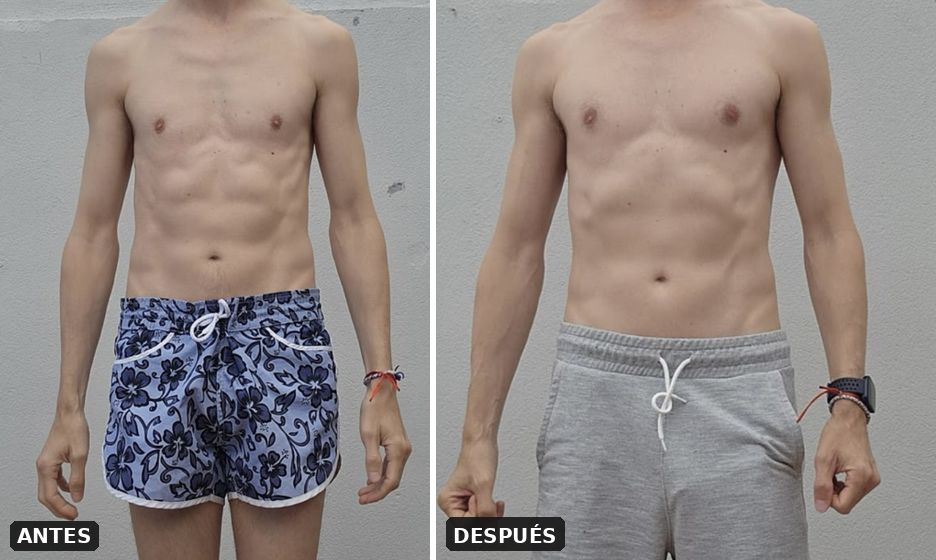

Dave
+5 kg · 6 mesesToda su vida le llamaron «el flacucho». A los 42 años partía de 53 kg. No le frenaba el gimnasio: le frenaba no poder sostener la comida. Montamos una estructura adaptada a él, sin dietas extremas ni suplementos como base.
«No tenía miedo al gimnasio, tenía miedo a no poder comer.»